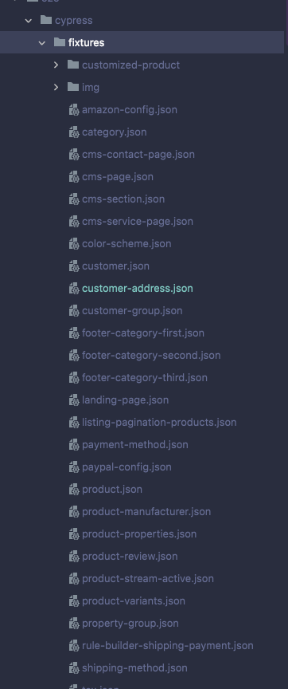

Fixtures

{
"addresses": [
{
"firstName": "Pep",
"lastName": "Eroni",
"street": "Ebbinghoff 10",
"zipcode": "48624",
"city": "Schöppingen"
}
]
}
Integration
describe('Account login', () => {
beforeEach(() => {...});
it('@visual: check appearance of login with wrong credentials', () => {
cy.get('.account-menu [type="button"]').click();
cy.get('.account-menu-dropdown').should('be.visible');
cy.get('.account-menu-login-button').click();
accountPage.login();
cy.get('.account-welcome h1').should((element) => {
expect(element).to.contain('Overview');
});
cy.takeSnapshot('[Account] Login', '.account');
});
});
Plugins
// This function is called when a project is opened or re-opened
// (e.g. due to the project's config changing)
require('@babel/register');
const selectTestsWithGrep = require('cypress-select-tests/grep');
module.exports = (on, config) => {
on('file:preprocessor', selectTestsWithGrep(config));
};
Support
/**
* Takes a snapshot for percy visual testing
* @memberOf Cypress.Chainable#
* @name takeSnapshot
* @param {String} title - Title of the screenshot
* @param {String} [selectorToCheck = null] - Unique selector to make sure the module is ready for being snapshot
* @param {Object} [width = {widths: [375, 768, 1920]}] - Screen width used for snapshot
* @function
*/
Cypress.Commands.add('takeSnapshot', (title, selectorToCheck = null, width = {widths: [375, 768, 1920]}) => {
if (!width) {
cy.percySnapshot(title);
return;
}
cy.percySnapshot(title, width);
});